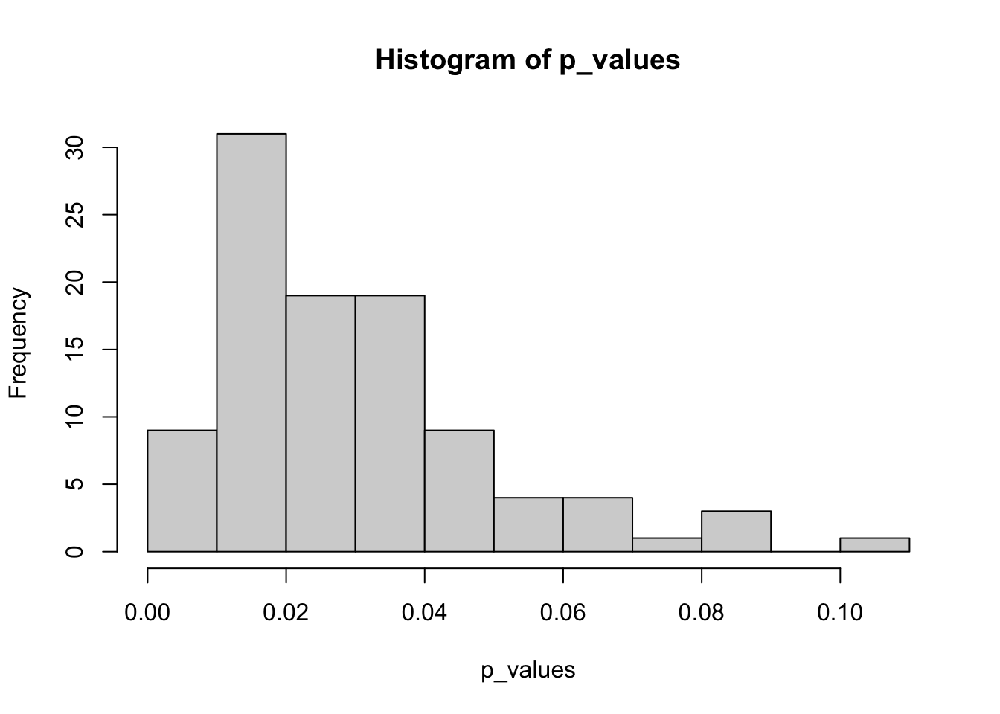
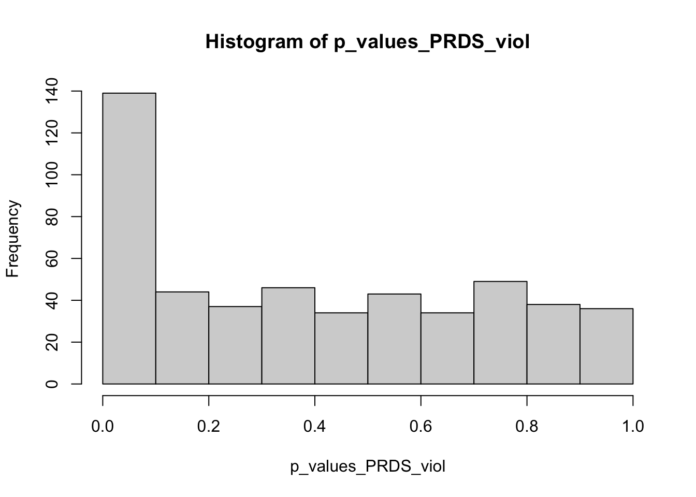

False Discovery Rates
Notes
An alternative to p-value corrections in Multiple Testing
Motivation
When we have do perform multiple hypothesis tests on the same data, we must correct for the family wise error rate (FWER). This comes from the definition of Type I Error and independence among \(n\) hypothesis tests.
\[ \begin{align*} \mathbb{P}[\text{At least one Hypothesis } H_0 \text{ incorrectly rejected} \mid H_0 \text{ is the truth}] = \\ 1 - \mathbb{P}[\text{None of the Hypotheses } H_0 \text{ were incorrectly rejected} \mid H_0 \text{ is the truth}] = \\ 1 - (1-\alpha)^n \end{align*} \]
What this means is that the more hypothesis tests we perform, the more likely we made at least one Type I error. In the past, some corrections have been proposed to correct the FWER. The most popular is the bonferonni adjustment to the \(\alpha\) value (given as \(\alpha_b = \frac{\alpha}{n}\)). This works best with a small number of comparisons and independent hypothesis tests. This is often the most conservative adjustment possible. Other methods have been developed for dependent hypothesis tests and those that are slightly less conservative. However, for fields like genomics where they perform 1000s upon 1000s of hypothesis tests, this type of correction is way too conservative, decreasing statistical power, i.e. \(\mathbb{P}[\text{Hypothesis } H_0 \text{ was rejected} \mid H_1 \text{ is the truth}]\).
The False Discovery Rate
The False Discovery Rate (FDR) was introduced by Benjamini and Hochberg 1. Instead of correcting for the FWER, FDR accepts a small proportion of false positives in exchange for a much less conservative adjustment. In more formal terms, FDR “controls the expected proportion of falsely rejected hypotheses”. For example, if the FDR is set to 0.05 and we have 20 significant hypothesis test results, we expect 1 to be a false positive on average.
The original method for FDR (Benjamini-Hochberg Procedure) focused on independent or positively correlated (Positive Regression Dependency on a Subset: PRDS) hypothesis tests. Their procedure used an adjusted p-value, called the q-value.
Let \(H_{(i)}\) indicate the \(i^{th}\) hypothesis test and let \(p_{(i)}\) be its corresponding p-value. Fix \(q = 0.05\) as our False Discovery Rate:
- Order the hypotheses based on their p-values such that \(p_{(1)} \leq p_{(2)} \leq \dots \leq p_{(m)}\). The order of the p-value will be its so-called rank.
- Determine the largest significant rank, i.e. the \(k^{th}\) p-value that satisfies \(p_{(k)} \leq \frac{k}{m} q\), i.e. \(k = \max \big\{ i \mid p_{(i)} \leq \frac{i}{m} q \big\}\)
- Reject all null hypotheses from rank \(1\) to rank \(k\)
Note that just like adjusting for FWER, we can adjust the global rejection region or the p-values themselves to reflect the multiple comparisons. Just implementing this procedure does not calculate a q-value. We can calculate q-values: $q_{(i)} = p_{(i)} $ and use the \(Q = 0.05\) threshold as a rejection region.
Here is some R code, with the main function coming from the stats package 2.
The adjusted p-value for BH gives us the q-values. We can see how many hypothesis tests are below our \(\alpha\) threshold for the Benjamini-Hochberg Procedure v.s. the Bonferroni Correction for FWER.
[1] 72[1] 0As we can see, Bonferroni rejects no hypothesis test based on the \(\alpha\) threshold. BH on the other hand gives 72 q-values below the \(\alpha\) threshold. We should expect that around 4 of these hypothesis tests are incorrectly rejected.
Procedure for Unknown Dependencies in Hypothesis Tests
In practice, we may not be confident what the dependencies in the hypothesis tests are. In the case where they are not independent or positively correlated, the Benjamini-Yekutieli procedure can be used 3. It is a more conservative version of the Benjamini-Hochberg Procedure.
To demonstrate, I will draw dependent draws from a multivariate normal distribution (MASS package in R)4.
library(MASS)
rho <- -0.0017
# Number of tests and means
m <- 500
m1 <- 0.2*m # 100 tests are different
mu_vec <- c(rep(4, m1), rep(0, m - m1))
# A negative correlation matrix
sigma <- matrix(rho, nrow = m, ncol = m)
diag(sigma) <- 1 #diagonals should be 1
# Generate data from MVN for all
test_stats <- MASS::mvrnorm(n = 1, mu = mu_vec, Sigma = sigma)
# Convert these test statistics into p-values using standardized normal (two sided)
p_values_PRDS_viol <- 2 * (1 - pnorm(abs(test_stats)))
hist(p_values_PRDS_viol)
BY is more conservative than BH, but since we know we are under negative dependence, BY is the valid approach. One should choose a procedure before implementing.
Of course if I wanted to see expectation of the FDR, I would have to do many iterations. I omitted this since I just wanted to see how BY and BH can be different.
[1] 83[1] 96Just like many flexible methods in statistics, the Benjamini-Yekutieli procedure performs worse than the Benjamini-Hochberg procedure under independent / positively correlated only hypothesis tests. This can be seen with the original p_values data:
[1] 72[1] 0In my application, I think I will just assume an unknown dependency structure and use the BY procedure. Independence is a strong assumption, especially on the same data, and just having positive correlation also seems like a strong assumption.
Footnotes
Benjamini, Yoav, and Yosef Hochberg. “Controlling the False Discovery Rate: A Practical and Powerful Approach to Multiple Testing.” Journal of the Royal Statistical Society. Series B (Methodological) 57, no. 1 (1995): 289–300. http://www.jstor.org/stable/2346101.↩︎
There is some detail about the distribution of p-values being uniform? I wasn’t really sure what this was, but I would have to assume it works for something like this.↩︎
Benjamini, Yoav, and Daniel Yekutieli. “The Control of the False Discovery Rate in Multiple Testing under Dependency.” The Annals of Statistics 29, no. 4 (2001): 1165–88. http://www.jstor.org/stable/2674075.↩︎
As a side note, \(-\frac{1}{m-1} \leq \rho \leq 1\) for the correlation matrix to be postive-definite (i.e. non-negative variance)↩︎